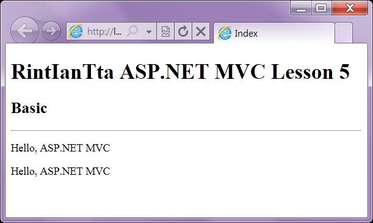

바로 소스로 와봅시다.
오늘의 주제인 ViewData와 ViewBag은 Controller에서 View로 데이터를 넘기는 방법 중에 하나랍니다.
쨌건, 사용방법은 다음과 같습니다.
"음... 뭐죠.. ViewData나 ViewBag에 FromViewData 라는 내용이 있는 것인가요 .. ?"
『아뇨, 그렇지 않습니다.』
우리가 지금 동적으로 만들어준 것이랍니다.
즉, FromViewData가 아니라 ASD 라고 만드셔도 된다는 얘기랍니다. ㅇㅁㅇ ㅎㅎ
그리고 View 에서는 불러주면됩니다.
다만, 오타에 주의하도록 해주세요 .. !
인텔리센스가 뜨지 않으니까요 ㅎㅎ
실행결과입니다.
『Controller -> View』로 데이터 전송이 일어난 것을 보실 수 있으실 거랍니다.

그럼 이번에는 간단한 Person 이라는 클래스를 만들어보았어요.
그리고 뭐
이래이래 써주었답니다.
참고적으로 Person 이라는 클래스도 public 으로 설정해주시는 것이 더 좋기는 하답니다.
쨌건, Person으로 List를 만들어서 넘겨주었답니다.
그리고
foreach를 사용해서 반복을 돌릴 것인데요.
"으... 으?!"
『...!!』
"인텔리센스가 안 떠요."
『네 안뜹니다. ㅇㅁㅇ ... 충격적사태라고 할 수 있겠지요.』
하지만 그냥 써주셔도 문제 없답니다. .. !
실행 결과랍니다. .. !
이제 Controller에서 View로 데이터를 넘기는 방법을 아셨지요 .. ?
곧 11강부터 Model에 대해서 다룰 것인데 그때는 인텔리센스도 보실 수 있을 것이랍니다.
질문1: ViewData, ViewBag을 자바스크립트 안에서 사용할수 있나요?
예) var dataTest = ViewData["test"];
답 : 불가능합니다.
대신 html 태그에 data-custom 속성을 넣고 데이터를 넣으시면 자바스크립트에서 뽑아서 사용할 수 있겠죠